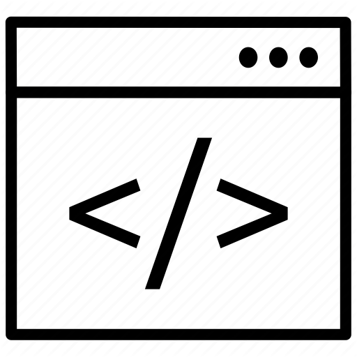
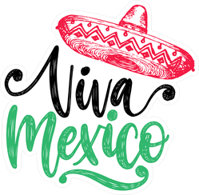

Opiskelen Haaga-Heliassa toista vuotta tietojenkäsittelyä, suuntautumisena ohjelmistotuotanto.
Aikaisemmalta koulutukseltani olen sairaanhoitaja, ja olen työskennellyt hoitoalalla useita vuosia.
Olen toiminut espanjan kielisenä matkaoppaana Helsingissä, joten kotiseututuntemus ja espanjan kieli
ovat hyvin hallussa.
Olin vapaaehtoistyössä Meksikossa, ja tehtäviini kuului sämpylöiden leipominen myyntiin.

Vapaaehtoistyössä Meksikossa avustin läksyissä ja muissa päivittäisissä tehtävissä.
Vapaaehtoistyössä Meksikossa tehtäviini kuului lapsista huolehtiminen orpokodissa.
Sairaanhoitajaopintojen aikana olin Kiinassa vaihdossa China-Japan-Frendship-sairaalassa leikkausosastolla.
Kiinan vaihdon aikana keräsin lisätienestejä katusoittajana.

Kiinan vaihdossa pääsin tutustumaan kiinalaisen lääketieteen osastoon. Pääsin tekemään mm.
guasha-hoitoja.
Hogares Providenciassa leipomiani sämpylöitä, jotka myytiin kaupungintalon ruokalaan.
Leivoin myös korvapuusteja, jotka myin itse ihmisille.
Olen toiminut opettajan sijaisena peruskoulussaa.
Olen työskennellyt neljä kesää mansikkamaalla. Se oli työ joka vaati erittäin
lujaa henkistä ja ruumiillista kanttia.